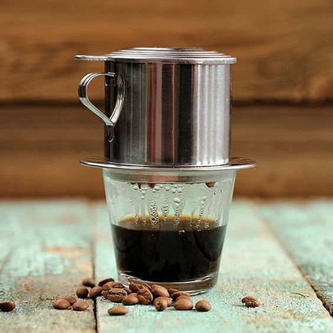

Apa itu Kopi?
Kopi adalah minuman yang diperoleh dari biji kopi yang telah dipanggang dan dihaluskan. Biji kopi berasal dari tanaman kopi (Coffea), yang buahnya disebut "buah kopi" atau "cereza." Proses produksi kopi melibatkan beberapa langkah, termasuk panen buah kopi, pengupasan kulit buah, fermentasi, pengeringan biji, penggilingan, dan akhirnya, pemanggangan biji kopi.
Secara kimia, biji kopi mengandung kafein, yang merupakan senyawa psikoaktif yang memberikan efek stimulan pada sistem saraf pusat manusia. Rasa dan aroma kopi bervariasi tergantung pada berbagai faktor, termasuk jenis tanaman kopi, kondisi tumbuhnya, proses pengolahan, dan metode pemanggangan.
Ada berbagai jenis kopi, termasuk kopi arabika dan robusta, yang merupakan dua jenis tanaman kopi yang paling umum dikonsumsi. Kopi dapat disajikan dalam berbagai gaya, seperti kopi hitam, espresso, latte, cappuccino, dan sebagainya, tergantung pada cara penyajiannya dan bahan tambahan yang ditambahkan.
Kopi tidak hanya menjadi minuman yang populer di seluruh dunia, tetapi juga memiliki signifikansi budaya dan sosial di berbagai masyarakat. Banyak orang menikmati kopi sebagai minuman penyegar dan penyemangat, serta sebagai bagian dari ritual sosial atau kebiasaan sehari-hari.

Basic Tools
1. Manual Grinder
Grinder manual adalah alat yang digunakan untuk menggiling biji kopi secara manual menjadi bubuk kasar atau halus, tergantung pada kebutuhan penyeduhan kopi. Grinder manual biasanya digunakan oleh para pecinta kopi yang menghargai kontrol lebih besar terhadap proses penggilingan dan ingin menghasilkan bubuk kopi yang konsisten dan sesuai dengan preferensi mereka.
2. Electric Grinder
Grinder otomatis atau elektrik adalah perangkat yang digunakan untuk menggiling biji kopi secara otomatis menjadi bubuk kopi sesuai dengan tingkat kehalusan yang diatur. Grinder ini memanfaatkan motor listrik untuk menghasilkan gerakan rotasi yang memutar mata gurdi atau batang penggiling, sehingga menghasilkan gilingan kopi.
4. Moka Pot
Moka pot, juga dikenal sebagai "stovetop espresso maker" atau "caffettiera," adalah perangkat kopi yang dirancang untuk menyeduh kopi yang mirip dengan espresso menggunakan metode tekanan uap. Meskipun namanya mengandung kata "espresso," kopi yang dihasilkan oleh moka pot tidak identik dengan espresso yang dihasilkan oleh mesin espresso yang menggunakan tekanan air yang lebih tinggi.
5. French Press
French press adalah metode penyeduhan kopi yang populer dan mudah digunakan. Juga dikenal sebagai press pot, coffee press, atau cafetière, French press terdiri dari wadah gelas atau logam dengan piston dan saringan. Metode ini memberikan hasil kopi yang kaya, beraroma, dan kental.
6. Vietnam Drip

Vietnam drip, juga dikenal sebagai phin filter atau Vietnamese drip filter, adalah metode tradisional Vietnam untuk menyeduh kopi. Metode ini menggunakan alat yang disebut "phin filter," yang mirip dengan dripper atau alat penyaring kopi.
7. V60
V60 adalah merek dripper atau alat penyaring kopi yang populer dalam metode penyeduhan kopi manual. Nama "V60" merujuk pada sudut kemiringan cembung 60 derajat pada dinding sisi dripper, yang memberikan karakteristik unik pada desainnya.
8. Kettle
Kettle untuk kopi adalah alat yang dirancang khusus untuk memanaskan air dan digunakan dalam proses penyeduhan kopi. Kettle ini umumnya memiliki fitur-fitur tertentu yang membuatnya cocok untuk keperluan kopi manual, seperti metode pour-over atau penyeduhan dengan V60.
Selain alat-alat ini, setiap coffeeshop juga akan memiliki peralatan pendukung seperti cangkir, gelas, sendok, dan tempat penyimpanan biji kopi. Keseluruhan peralatan ini menciptakan lingkungan kerja yang lengkap untuk menyajikan kopi berkualitas tinggi kepada pelanggan.
Sejarah
Sejarah kopi berkaitan dengan penyebaran dan pengolahan tanaman kopi. Sejarah kopi mulai dicatat sejak abad ke-9 dimulai dari Ethiopia.
Biji kopi asli ditanam oleh orang Ethiopia di dataran tinggi. Ketika bangsa Arab mulai memperluas perdagangannya, penyebaran biji kopi turut meluas hingga ke Afrika Utara dan ditanam secara massal di sana.
Dari Afrika Utara, penyebaran biji kopi meluas ke Asia hingga pasar Eropa dan mulai dikenal sebagai salah satu minuman yang punya rasa enak dan nikmat
Tanaman kopi masuk ke Indonesia pada masa kolonial Belanda. Dengan adanya arus globalisasi dan kapitalisme Belanda, tanaman kopi bertransformasi menjadi sebuah budaya Indonesia dan menjadi bagian dari keseharian masyarakat lokal.
Budaya kopi yang ada di Indonesia memiliki pengaruh dari Eropa, terutama Italia, Cina, Melayu, dan budaya lokal, seperti Jawa dan Sumatra, baik dalam hal pengolahan maupun penyajian.
.png)